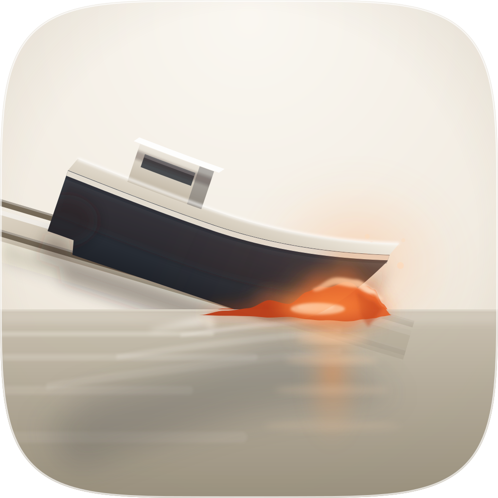
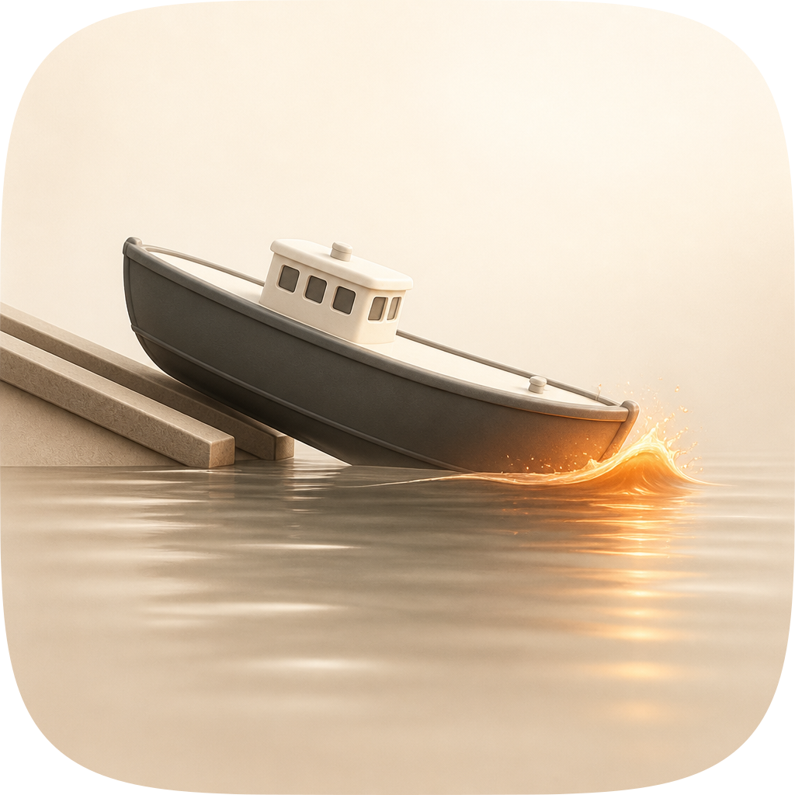
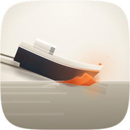
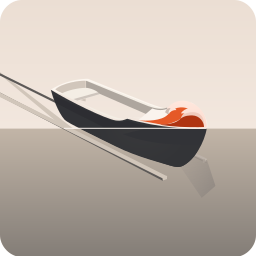
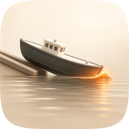
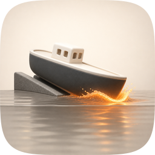

| Take | Renders at 128 / 64 / 48 / 32 / 16 css px (2× retina sources), plus the 16px squint magnified | Rubric | Verdict |
|---|---|---|---|
| A · icon.svghand-authored layered SVG — SHIPS | 11 / 12 | Checks 1–4 all clear on the real renders. At 16px the wedge keeps a legible deckhouse notch and one ember spark at the leading tip — the identity survives where every raster take's does not. Four genuine layers (bg / mid / fg / highlight), identity carried by the hull's shape and value, so #10 holds with the ember demoted to a droppable highlight plane. Measured figure-ground 4.04:1 at 48px (hull darkest 5% 0.199 against porcelain 0.958); whole-image self-contrast 0.415. Loses one point on #2 grid: the vessel spans 69% of the tile against the catalogue's 55–65% band — deliberate, bought in r11/r12 to keep 16px identity, and the one number a future round should revisit first. |
|
| A0 · fidelity-runs/r00Engine A before the loop — the “before” row |  |
9 / 12 | Kept in because it is the measurement, not decoration: same composition, same palette, twelve loop rounds earlier. Fails #8 depth coherence — the bow wave is a smooth mound with no breaking asymmetry, so it reads as a moulded object of unclear depth sitting under the hull rather than as displaced water — and #11 personality, because the waterline crossing was drawn as a hard rule rather than a material event. Marginal on #4: at 16px the vessel is 0.411 self-contrast against A's 0.417 and the deckhouse notch has already closed. What the loop actually bought is visible in this row. |
| B · icon-engineB-arrow-b549df.svgArrow 1.1 vector take |  |
6 / 12 | Loses on the two non-negotiables and three more. #3 silhouette: it drew an open dinghy, which is the exact glyph create-swe-project already owns on this shelf, and the tile splits 50/50 on a hard horizon so the mark is a colour relationship rather than a shape. #4: the hull dissolves by 32px and the wave becomes one red pixel cluster. Also #5 (no light model — flat fills throughout), #8 and #10. Salvaged into the master: nothing geometric, but it was the take that made the horizon-splits-the-tile failure obvious early enough to fix in A, where the waterline now crosses the object rather than the frame. |
| C1 · icon-engineC-dcf6f9.pngGPT Image 2, corpus-referenced — MATERIAL TARGET |  |
9 / 12 | The best material in the set and it still cannot ship. #4 16px: the failure is not contrast — its whole-image spread is 0.565 against A's 0.415 — it is silhouette definition. The gunwale, the wheelhouse and the sheer all dissolve into one undifferentiated dark lozenge with a faint orange edge, and at 16px you cannot tell it is a boat. #10: flat pre-masked raster, the corpus's single most common failure. #7 is marginal at 48px (darkest 5% 0.254 on a warm beige ground rather than porcelain). Used as the loop reference for thirteen scored rounds; what it taught the master is the mirrored water reflection, the vertical ember streak, the wheelhouse window band, and that a hot core belongs on the waterline and white belongs only on the lip. |
| C2 · icon-engineC-0b4986-2.pngGPT Image 2, second take |  |
8 / 12 | Handsomer hull than C1 and further from the brief. The ground went cool photographic grey, which is the trawl icon's register rather than this shelf's porcelain, so it fails #6 palette economy and #9 era coherence together — the water is rendered photographically, not as Tahoe gel. Same #4 and #10 failures as C1, and its slipway became a plain grey wedge that reads as a rock rather than a ramp. Lost the material judgment to C1 on register alone; kept because the disagreement between two takes off one prompt is itself the finding about how far the raster engine will drift on ground colour. |
bg / mid / fg / highlight map 1:1 onto Icon Composer, the waterline crossing is an authored overlap of two real planes rather than a baked gradient, and the ember is a highlight layer the hull survives without. Material provenance: thirteen scored fidelity rounds against C1 (fidelity-runs/r00 → r13), mean composite 0.5827 → 0.6177, 1024px 0.4909 → 0.5090, 32px 0.7307 → 0.7673, 16px 0.7648 → 0.7861. Fourteen scored rounds, four of them rejected by the gate and two of those kept anyway: r02 (the ember bounce that had turned the whole bow bronze) and r11 (the vessel scaled up for 16px identity) both cost composite and both fixed a rubric-visible defect, which is the loop's own rule that a gate ACCEPT is evidence and never a verdict.
create-swe-project already owns a boat-on-a-slipway glyph on this shelf; the separation here is deliberate and complete at 128px (decked vessel vs open dinghy, porcelain/graphite vs cool blue, ember on the water vs amber on the hull, motion vs repose) but at 16px both reduce to a raked hull, and that collision is real. (4) The three wave-train arcs are the only element that reads as drawn rather than lit; they were dimmed by a third in r11 and could still go. (5) The gate rejected r09 and r11 and the rubric shipped them anyway — the reference frames its vessel smaller and carries less small-size definition than the master needs, so the last two rounds deliberately moved away from it.python3 scripts/audit_sheet.py render . (1024 / 256 / 128 / 96 / 64 / 32 sources); verified by its check subcommand.
audit-renders/render-manifest.json records take A against icon.svg, and re-rendering A from the shipped master reproduces icon.png and icon-256.png byte for byte, so the sheet and the delivery are provably the same artifact. The A0, B, C1 and C2 renders are frozen history: their sources (fidelity-runs/r00, icon-engineB-arrow-b549df.svg, icon-engineC-dcf6f9.png, icon-engineC-0b4986-2.png) and the fourteen scored fidelity rounds behind the recommendation live in the commission workspace, which is deliberately outside the repo, so those four rows are not machine-checkable from this directory and are recorded here as evidence rather than as reproducible renders.